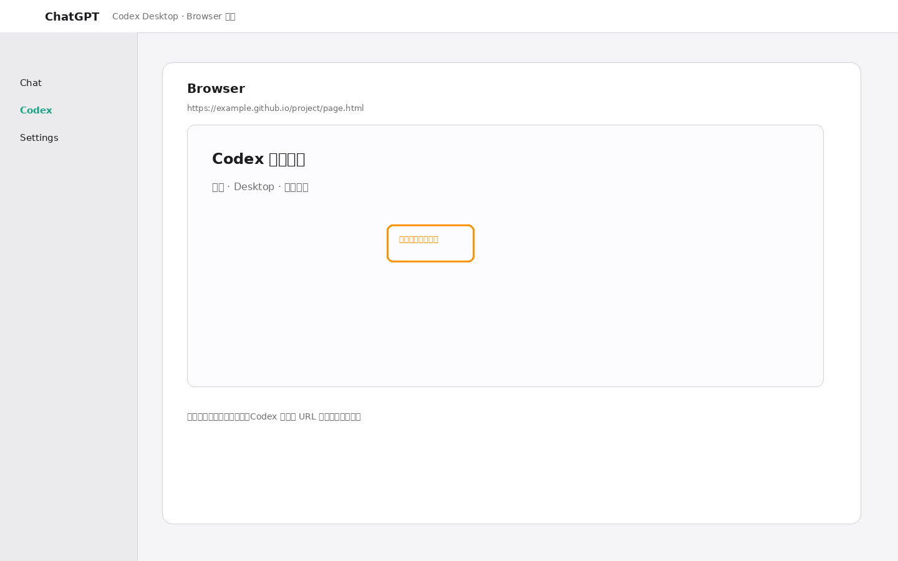
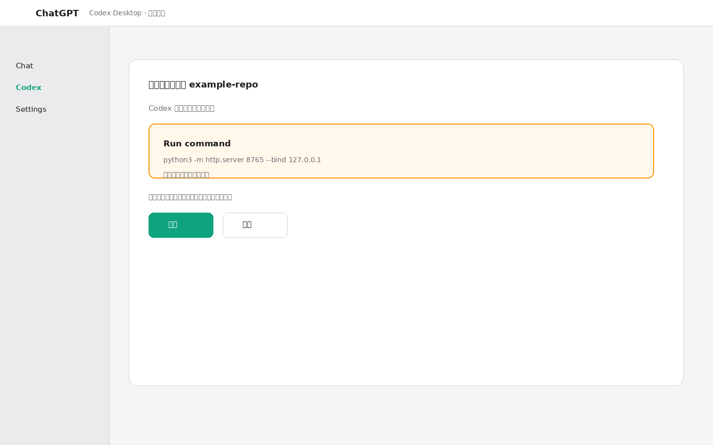
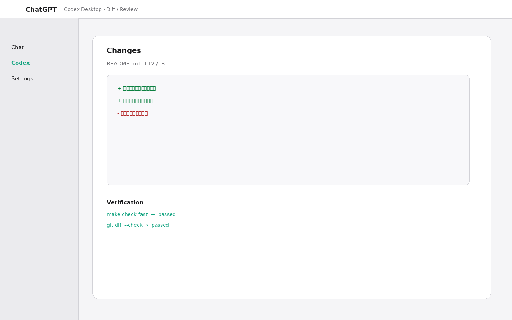

页面和视觉反馈
网页、PDF、截图、排版、交互状态、GitHub Pages 发布效果，适合放在 Desktop 里迭代。
Codex Desktop
官方产品名是 ChatGPT desktop app；本指南把其中的 Codex 工作面简称为“Codex Desktop”。这份手册只把 Codex Desktop 作为主入口：它把对话、仓库、Integrated terminal、共享 Browser、权限审批、Git diff 和发布验证放在同一个工作面里。
如果任务需要你边看结果边调整，或者需要 Codex 解释它正在做什么，Desktop 应该是默认入口。重复任务也先在 Desktop 跑通，再沉淀为 Scheduled tasks（定时任务）。
网页、PDF、截图、排版、交互状态、GitHub Pages 发布效果，适合放在 Desktop 里迭代。
让 Codex 读 AGENTS.md、源码、测试和 diff；用户也可以在任务中打开 Integrated terminal 并运行验证命令。
安装依赖、联网查询、启动本地服务、推送 Git，都可以在 Desktop 里看到原因后再批准。
批量审查、周期检查、文档漂移、链接检查和固定报告，先在 Desktop 任务跑通，再放进 Scheduled tasks 后台执行；结果在 Scheduled 视图查看。
同一个任务建议有一个主线程负责判断。不要在多个 Desktop 线程里同时改同一批文件，除非写范围严格隔离。
一个线程只放一个目标。开头写清仓库路径、页面 URL、当前问题、验收标准和禁区。
要求先读 AGENTS.md、README、相关页面或源码。复杂任务再让它跑 rg 找入口。
Browser 是你与 ChatGPT 的共享视图：可预览页面、在具体区域留下视觉反馈或评论，也可让 ChatGPT 与页面交互。反馈时附上当前 URL 和预期结果。
遇到联网、启动服务、推送、安装依赖等请求，先看 Codex 给出的理由，再决定是否批准。
让 Codex 报告改了哪些文件、跑了哪些命令、哪些页面或测试已经通过。
如果是 GitHub Pages 或 PR，要求 Codex 等状态完成后抽样公开 URL，而不是只说“已 push”。



我在 Codex Desktop 的浏览器里打开：
https://example.github.io/project/page.html
问题：
- 当前区域内容太少
- 需要补充 Desktop 操作步骤
请先读 AGENTS.md 和相关 HTML。
只改网页内容，不改视觉风格。
完成后本地抽样访问，再推送并验证公开 URL。我在 Desktop 里处理这个仓库：
/path/to/repo
现象：
- 测试 npm test -- checkout 失败
要求：
- 先读 AGENTS.md 和失败日志
- 改动前说明根因
- 只改 checkout 相关文件
- 完成后运行最窄测试并报告 diff如果需要联网、启动本地服务或 git push，
请先说明：
- 为什么需要这个权限
- 会访问或写入哪里
- 成功后如何验证
不要在没有说明的情况下执行外部写操作。最终请按这个格式回答：
改动：
- [文件] [变化]
验证：
- [命令/URL] [结果]
交付：
- commit: [hash]
- 公开链接: [URL]
风险：
- [未验证项或人工确认项]用户在 Desktop 浏览器里打开 workflows.html，要求“主要面向 Codex Desktop，把桌面版操作加进去”。这是一个典型的 Desktop 任务：用户提供页面上下文，Codex 读取仓库规则和页面，修改 HTML，运行检查，推送后再验证公开站点。